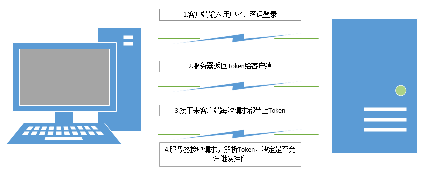

这个例子是基于客户端与webapi进行进行交互的身份认证，当然也适用于其他情况下的身份认证。
简单的交互过程：

1.首先输入用户名、密码进行登录操作
2.服务器验证用户名、密码的正确性，验证通过之后，服务器对一个json字符串进行加密，加密的内容、加密方法可以自己确定。
本次我加密的内容主要是用户名和登录时间，可根据需求添加其他加密内容，加密方法就是采用DES加密。然后将加密的后的字符串（Token）返回给到客户端，客户端需要自己保存起来。
3.接下来，客户端的每次请求都需要带上这个Token。
4.对于客户端的每次请求，服务器首先都要去获取Token，检查Token是否合法，并解密Token内容，检查Token是否过期等。
Token格式
未加密之前的字符串是什么样的呢，我这里是最简单的格式，如下：
{
"username":"",//用户名
"createtime":""//认证时间
}登录认证通过之后，把这个json格式的字符串进行加密生成字符串Token，返回给客户端。
至于好处呢，服务器不需要保存会话状态，不用担心会话丢失，也可以减轻服务器压力，然后利用这种方式也方便部署分布式服务，将一个服务拆分成多个小服务，减轻单台服务器的压力。
DES加解密算法
这里只是一种加解密算法而已，根据需要自己选择合适的算法。
const string DESKey = "sddsdds";//秘钥
const string DESIV = "errtertet";//向量
//加密
public string EncryptDES(string ToEncrypt, string DESKey, string DESIV)
{
using (DESCryptoServiceProvider des = new DESCryptoServiceProvider())
{ //创建des实例
byte[] inputByteArray = Encoding.UTF8.GetBytes(ToEncrypt);//将需要加密的内容转为字节
des.Key = ASCIIEncoding.ASCII.GetBytes(DESKey);//秘钥
des.IV = ASCIIEncoding.ASCII.GetBytes(DESIV);//向量
System.IO.MemoryStream ms = new System.IO.MemoryStream();//创建流实例
using (CryptoStream cs = new CryptoStream(ms, des.CreateEncryptor(), CryptoStreamMode.Write))
{//把输出的内容通过第二个参数转换(加密)馈送到第一个参数ms
cs.Write(inputByteArray, 0, inputByteArray.Length);
cs.FlushFinalBlock();
cs.Close();
}
//转为Base64后输出
string str = Convert.ToBase64String(ms.ToArray());
ms.Close();
return str;
}
}
//解密
public string[] DecodeDES(string Paras, string DESKey, string DESIV)
{
string Str = "";
string[] Ret = new string[2] { "",""};
try
{
byte[] inputByteArray = Convert.FromBase64String(Paras);
using (DESCryptoServiceProvider des = new DESCryptoServiceProvider())
{
des.Key = ASCIIEncoding.ASCII.GetBytes(DESKey);
des.IV = ASCIIEncoding.ASCII.GetBytes(DESIV);
System.IO.MemoryStream ms = new System.IO.MemoryStream();
using (CryptoStream cs = new CryptoStream(ms, des.CreateDecryptor(), CryptoStreamMode.Write))
{
cs.Write(inputByteArray, 0, inputByteArray.Length);
cs.FlushFinalBlock();
cs.Close();
}
Str = Encoding.UTF8.GetString(ms.ToArray());
ms.Close();
Ret[0] = "1";
Ret[1] =Str;
}
}
catch (Exception ex)
{
Ret[0] = "-1";
Ret[1] = ex.ToString();
}
finally {
}
return Ret;
}